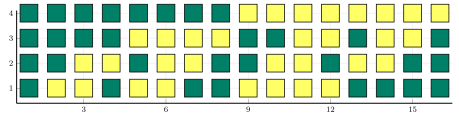

Examples
Recursive construction

Recursive procedure

Reflect $C[n-1]$, shift by $q^{n-1}$ and augment (TBD).
Gray code $g[n]$ can be recursively constructed as follows. Start with $g[1] = (0,1)$ and for $N=2^n, n \ge 1$, Let $g[n] = \left(x_{1},\ldots,x_{N−1},x_{N}\right)$,
\[g[n+1] = \left(0x_{1},\ldots,0x_{N−1},0x_{N},1x_{N},1g_{N−1},...,1x_{1}\right).\]
Illustration
using Plots
function plotmatrix(A;kwargs...)
a,b=size(A)
X = transpose(repeat(1:b, 1, a))[:]
Y = repeat(a:-1:1, b)[:]
scatter(X,Y, marker_z = A[:], marker=:rect,markersize = 4, color = :viridis,aspectratio=1,ylims=[0,size(G,1)+1],alpha=1,label=:none,colorkey=:none,axis=:none;kwargs...)
julia> plotmatrix(gray(6));
julia> plotmatrix(G,size=(800,400),color=:summer)
julia> plotmatrix(G,size=(800,200),color=:summer,markersize=7,xlims=[1,size(G,2)+0],ylims=[1/2,size(G,1)-0])
end 
Linear Algebraic method
TBD $g=Gb$ and $b=Bg$, where $G$ is a Jordan matrix, which is
julia> n,q=4,2
julia> GrayCoding.GrayMatrix(n,q)
4×4 Matrix{Int64}:
1 0 0 0
1 1 0 0
1 1 1 0
1 1 1 1
4×4 Matrix{Int64}:
1 0 0 0
1 1 0 0
0 1 1 0
0 0 1 1
4×16 Matrix{Int64}:
0 0 0 0 0 0 0 0 1 1 1 1 1 1 1 1
0 0 0 0 1 1 1 1 0 0 0 0 1 1 1 1
0 0 1 1 0 0 1 1 0 0 1 1 0 0 1 1
0 1 0 1 0 1 0 1 0 1 0 1 0 1 0 1
4×16 Matrix{Int64}:
0 0 0 0 0 0 0 0 1 1 1 1 1 1 1 1
0 0 0 0 1 1 1 1 1 1 1 1 0 0 0 0
0 0 1 1 1 1 0 0 0 0 1 1 1 1 0 0
0 1 1 0 0 1 1 0 0 1 1 0 0 1 1 0
julia> G,B,g,b=GrayCoding.GrayMatrix(10,5);
julia> G
10×10 Matrix{Int64}:
1 0 0 0 0 0 0 0 0 0
1 1 0 0 0 0 0 0 0 0
1 1 1 0 0 0 0 0 0 0
1 1 1 1 0 0 0 0 0 0
1 1 1 1 1 0 0 0 0 0
1 1 1 1 1 1 0 0 0 0
1 1 1 1 1 1 1 0 0 0
1 1 1 1 1 1 1 1 0 0
1 1 1 1 1 1 1 1 1 0
1 1 1 1 1 1 1 1 1 1
julia>B
10×10 Matrix{Int64}:
1 0 0 0 0 0 0 0 0 0
4 1 0 0 0 0 0 0 0 0
0 4 1 0 0 0 0 0 0 0
0 0 4 1 0 0 0 0 0 0
0 0 0 4 1 0 0 0 0 0
0 0 0 0 4 1 0 0 0 0
0 0 0 0 0 4 1 0 0 0
0 0 0 0 0 0 4 1 0 0
0 0 0 0 0 0 0 4 1 0
0 0 0 0 0 0 0 0 4 1